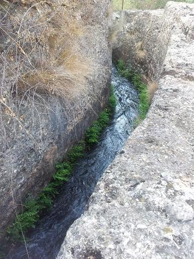
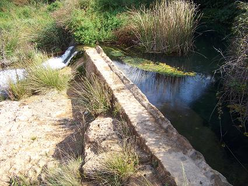
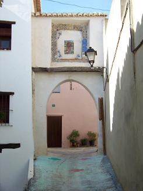

|
T U É J A R
Tuéjar data de la Edad del Bronce.
Destacan las pinturas rupestres de los Corrales de Silla. Se encuentran en
tres abrigos. De época iberorromana destaca el emplazamientos del
Castellar, el castillo de Zagra, la presa de origen romano y el nacimiento del
célebre acueducto romano de la Peña Cortada, el acueducto de la Dorca, las
explotaciones mineras de hierro de la época romana en la Peña del Rayo, el
arco del Portal de los Santos, un aljibe, la fuente de la Rocha, los
Aztucacs, el casco antiguo....
La presa romana es el origen del famoso
acueducto de la Peña Cortada.
Actualmente buena parte de la huerta de Tuéjar, Chelva y otros municipios
aún se riegan con el agua derivada de esta presa. Sigue el patrón de las
presas romanas, una pared perpendicular a la corriente del río, denominada
saeptum. Eleva el nivel del agua y deriva el agua hacia un lateral donde
se inicia el canal (specus), mientras que el agua sobrante desborda la
presa y sigue su caudal.
Ver: Presas romanas
 |
 |
 |
También destacamos el acueducto de origen romano de la Dorca del siglo I-II.
Actualmente en uso, pero esta deteriorado y pendiente de su consolidación.
El arco del Portal de los Santos data del siglo II. Reutilizado y
reformado posteriormente, era la principal puerta por la que se accedía a
la medieval Tuexa.
Ver: Arcos romanos

|